공인중개사-2차 (2016-10-29 기출문제)
1과목: 임의구분
1. 공인중개사법령상 용어와 관련된 설명으로 옳은 것을 모두 고른 것은?(다툼이 있으면 판례에 따름)
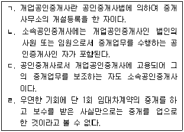
- ㄱ, ㄴ
- ㄱ, ㄷ
- ㄱ, ㄴ, ㄹ
- ㄴ, ㄷ, ㄹ
- ㄱ, ㄴ, ㄷ, ㄹ
(정답률: 59%)

2. 공인중개사법령상 공인중개사 정책심의위원회에 관한 설명으로 틀린 것은?
- 위원장은 국토교통부 제1차관이 된다.
- 심의위원회는 위원장 1명을 포함하여 7명 이상 11명 이내의 위원으로 구성한다.
- 심의위원회에서 중개보수 변경에 관한 사항을 심의한 경우 시·도지사는 이에 따라야 한다.
- 심의위원회 위원이 해당 안건에 대하여 연구, 용역 또는 감정을 한 경우 심의위원회의 심의·의결에서 제척된다.
- 위원장이 부득이한 사유로 직무를 수행할 수 없을 때에는 위원장이 미리 지명한 위원이 그 직무를 대행한다.
(정답률: 57%)
3. 공인중개사법령상 공인중개사의 자격 및 자격증 등에 관한 설명으로 틀린 것은?(다툼이 있으면 판례에 따름)
- 시·도지사는 공인중개사자격시험 합격자의 결정 공고일부터 2개월 이내에 시험합격자에 관한 사항을 공인중개사자격증교부대장에 기재한 후 자격증을 교부하여야 한다.
- 공인중개사의 자격이 취소된 후 3년이 경과되지 아니한 자는 공인중개사가 될 수 없다.
- 공인중개사자격증의 재교부를 신청하는 자는 재교부신청서를 자격증을 교부한 시·도지사에게 제출해야 한다.
- 공인중개사자격증의 대여란 다른 사람이 그 자격증을 이용하여 공인중개사로 행세하면서 공인중개사의 업무를 행하려는 것을 알면서도 그에게 자격증 자체를 빌려주는 것을 말한다.
- 공인중개사가 다른 사람에게 자기의 성명을 사용하여 중개업무를 하게 한 경우, 시·도지사는 그 자격을 취소해야 한다.
(정답률: 63%)
4. 공인중개사법령상 법인이 중개사무소를 개설하려는 경우 그 등록기준으로 옳은 것은?(다른 법률에 따라 중개업을 할 수 있는 경우는 제외함)
- 건축물대장에 기재된 건물에 100m2이상의 중개사무소를 확보할 것
- 대표자, 임원 또는 사원 전원이 부동산 거래 사고예방교육을 받았을 것
- 협동조합기본법에 따른사회적협동조합인 경우 자본금이 5천만원 이상일 것
- 상법상 회사인 경우 자본금이 5천만원 이상일 것
- 대표자는 공인중개사이어야 하며, 대표자를 제외한 임원 또는 사원의 2분의 1 이상은 공인중개사일 것
(정답률: 61%)
5. 공인중개사법령상 중개사무소의 개설등록에 관한 설명으로 틀린 것은?
- 사기죄로 징역 2년형을 선고받고 그 형의 집행이 3년간 유예된 경우, 그 유예기간이 종료된 공인중개사는 중개사무소의 개설등록을 할 수 있다.
- 배임죄로 징역 2년의 실형을 선고받고 그 집행이 종료된 날부터 2년이 경과된 공인중개사는 중개사무소의 개설등록을 할 수 있다.
- 등록관청은 이중으로 등록된 중개사무소의 개설등록을 취소해야 한다.
- 개업공인중개사인 법인이 해산한 경우, 등록관청은 그 중개사무소의 개설등록을 취소해야 한다.
- 등록관청은 중개사무소등록증을 교부한 경우, 그 등록에 관한 사항을 다음달 10일까지 공인중개사협회에 통보해야 한다.
(정답률: 61%)
6. 공인중개사법령상 이중등록 및 이중소속의 금지에 관한 설명으로 옳은 것을 모두 고른 것은?
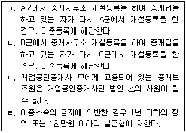
- ㄱ, ㄴ
- ㄷ, ㄹ
- ㄱ, ㄴ, ㄷ
- ㄴ, ㄷ, ㄹ
- ㄱ, ㄴ, ㄷ, ㄹ
(정답률: 59%)
7. 공인중개사법령에 관한 내용으로 옳은 것은?
- 폐업기간이 1년 미만인 경우, 폐업신고 전의 위반행위를 사유로 재등록 개업 공인중개사에 대하여 등록 취소 처분을 함에 있어서 폐업기간과 폐업의 사유는 고려의 대상이 아니다.
- 공인중개사 법을 위반하여 200만 원의 벌금형을 선고받고 5년 이 경과되지 아니한 자는 중개사무소의 개설등록을 할 수 없다.
- 휴업기간 중에 있는 개업공인중개사는 다른 개업공인중개사인 법인의 임원이 될 수 있다.
- 무자격자에게 토지매매의 중개를 의뢰한 거래 당사자는 처벌의 대상이 된다.
- 유치권이 행사되고 있는 건물도 중개대상물이 될 수 있다.
(정답률: 56%)
8. 공인중개사법령상 중개사무소의 설치 및 이전 등에 관한 설명으로 틀린 것은?
- 개업공인중개사는 중개사무소로 개설등록할 건물의 소유권을 반드시 확보해야 하는 것은 아니다.
- 분사무소는 주된 사무소의 소재지가 속한 시·군·구에 설치할 수 있다.
- 분사무소 설치신고는 주된 사무소의 소재지를 관할하는 등록관청에 해야 한다.
- 다른 법률의 규정에 따라 중개업을 할 수 있는 법인의 분사무소에는 공인중개사를 책임자로 두지 않아도 된다.
- 중개사무소를 등록관청의 관할 지역 외의 지역으로 이전한 경우에는 이전 후의 중개사무소를 관할하는 등록관청에 신고해야 한다.
(정답률: 59%)
9. 공인중개사법령상 인장등록에 관한 설명으로 틀린 것은?
- 개업공인중개사는 업무를 개시하기 전에 중개행위에 사용할 인장을 등록관청에 등록해야 한다.
- 소속공인중개사가 등록한 인장을 변경한 경우변경일부터 7일 이내에 그 변경된 인장을 등록관청에 등록해야 한다.
- 소속공인중개사의 인장의 크기는 가로·세로 각각 7㎜ 이상 30㎜ 이내이어야 한다.
- 법인인 개업공인중개사의 분사무소에서 사용할 인장은 상업등기규칙에 따라 신고한 법인의 인장으로만 등록해야 한다.
- 법인인 개업공인중개사의 인장등록은 상업등기규칙에 따른 인감증명서의 제출로 갈음한다.
(정답률: 56%)
10. 공인중개사법령상 중개보조원에 관한 설명으로 틀린 것은?
- 중개보조원은 공인중개사가 아닌 자로서 개업공인중개사에 소속되어 중개대상물에 대한 현장안내 및 일반서무 등 개업공인중개사의 중개 업무와 관련된 단순한 업무를 보조하는 자이다.
- 중개보조원은 고용관계가 종료된 날부터 7일 이내에 등록관청에 그 사실을 신고해야 한다.
- 중개보조원은 인장등록 의무가 없다.
- 개업공인중개사는중개보조원을고용한 경우 등록관청에 신고할의무가 있다.
- 중개보조원의 업무상 행위는 그를 고용한 개업공인중개사의 행위로 본다.
(정답률: 56%)
11. 공인중개사법령상 중개사무소의 명칭 등에 관한 설명으로 틀린 것은?
- 법인인 개업공인중개사는 그 사무소의 명칭에 “공인중개사사무소” 또는 “부동산중개”라는 문자를 사용해야 한다.
- 개업공인중개사는 옥외광고물을 설치할 의무를 부담하지 않는다.
- 개업공인중개사가 설치한 옥외광고물에 인식할 수 있는 크기의 연락처를 표기하지 않으면 100만원 이하의 과태료 부과대상이 된다.
- 개업공인중개사가 아닌 자가 사무소 간판에 “공인중개사사무소”의 명칭을 사용한 경우 등록관청은 그 간판의 철거를 명할 수 있다.
- 개업공인중개사가 아닌 자는 중개대상물에 대한 표시·광고를 해서는 안된다.
(정답률: 53%)
12. 공인중개사법령상 휴업과 폐업에 관한 설명으로 틀린 것은?
- 2개월의 휴업을 하는 경우 신고할 의무가 없다.
- 취학을 이유로 하는 휴업은 6개월을 초과할 수 있다.
- 휴업기간 변경신고는 전자문서에 의한 방법으로 할 수 있다.
- 등록관청에 폐업사실을 신고한 경우 1개월 이내에 사무소의 간판을 철거해야 한다.
- 중개사무소재개신고를 받은 등록관청은 반납을 받은 중개사무소등록증을 즉시 반환해야 한다.
(정답률: 61%)
13. 공인중개사법령상 전속중개계약에 관한 설명으로 옳은 것을 모두 고른 것은?
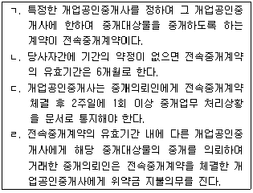
- ㄱ, ㄷ
- ㄴ, ㄹ
- ㄱ, ㄴ, ㄷ
- ㄱ, ㄷ, ㄹ
- ㄱ, ㄴ, ㄷ, ㄹ
(정답률: 54%)
14. 공인중개사법령상 개업공인중개사가 토지의 중개대상물 확인·설명서에 기재해야 할 사항에 해당하는 것은 모두 몇 개인가?
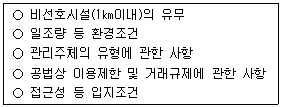
- 1개
- 2개
- 3개
- 4개
- 5개
(정답률: 48%)
15. 공인중개사법령상 개업공인중개사의 거래계약서 작성 등에 관한 설명으로 옳은 것은?
- 국토교통부장관이 지정한 표준거래계약서 양식으로 계약서를 작성해야 한다.
- 작성된 거래계약서는 거래당사자에게 교부하고 3년 간 그 사본을 보존해야 한다.
- 거래계약서의 사본을 보존기간 동안 보존하지 않은 경우 등록관청은 중개사무소의 개설등록을 취소할 수 있다.
- 중개대상물 확인·설명서 교부일자는 거래계약서 기재사항이 아니다.
- 분사무소의 소속 공인중개사가 중개행위를 한 경우 그 소속 공인중개사와 분사무소의 책임자가 함께 거래계약서에 서명 및 날인해야 한다.
(정답률: 53%)
16. 공인중개사법령상 ( )에 들어갈 기간이 긴 것부터 짧은 순으로 옳게 나열된 것은?
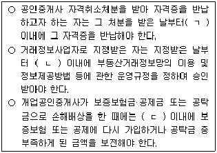
- ㄱ-ㄴ-ㄷ
- ㄴ-ㄱ-ㄷ
- ㄴ-ㄷ-ㄱ
- ㄷ-ㄱ-ㄴ
- ㄷ-ㄴ-ㄱ
(정답률: 52%)
17. 공인중개사법령상 개업공인중개사의 손해배상책임의 보장에 관한 설명으로 옳은 것은?
- 개업공인중개사는 중개를 개시하기 전에 거래당사자에게 손해배상책임의 보장에 관한 설명을 해야 한다.
- 개업공인중개사는 업무개시 후 즉시 손해배상책임의 보장을 위하여 보증보험 또는 공제에 가입해야 한다.
- 개업공인중개사가 중개 행위를 함에 있어서 거래 당사자에게 손해를 입힌 경우 고의·과실과 관계없이 그 손해를 배상해야 한다.
- 개업공인중개사가 폐업한 경우폐업한날부터5년이내에는 손해배상책임의 보장을 위하여 공탁한 공탁금을 회수할 수 없다.
- 개업 공인중개사는 자기의 중개사무소를 다른 사란의 중개행위 장소로 제공함으로써 거래당사자에게 재산상 손해를 발생하게 한 때에는 그 손해를 배상할 책임이 있다.
(정답률: 53%)
18. 공인중개사법령상 개업공인중개사가 1년 이하의 징역 또는 1천만원 이하의 벌금에 처해지는 사유로 명시된 것이 아닌 것은?
- 공인중개사자격증을 대여한 경우
- 중개사무소등록증을 양도한 경우
- 이중으로 중개사무소의 개설등록을 한 경우
- 중개의뢰인과 직접 거래를 한 경우
- 천막 그 밖에 이동이 용이한 임시 중개시설물을 설치한 경우
(정답률: 55%)
19. 공인중개사법령상 과태료 부과사유에 대한 부과·징수권자로 틀린 것은?
- 중개사무소등록증을 게시하지 않은 경우 - 등록관청
- 중개사무소의 이전신고를 하지 않은 경우 - 등록관청
- 개업공인중개사의 사무소 명칭에 “공인중개사사무소” 또는 “부동산중개”라는 문자를 사용하지 않은 경우 - 등록관청
- 거래당사자에게 손해배상책임의 보장에 관한 사항을 설명하지 않은 경우 - 시·도지사
- 부동산거래정보망의 이용 및 정보제공방법 등에 관한 운영규정을 위반하여 부동산거래정보망을 운영한 경우 - 국토교통부장관
(정답률: 53%)
20. 공인중개사법령상 개업공인중개사등의 교육에 관한 설명으로 옳은 것은?
- 분사무소의 책임자가 되고자 하는 공인중개사는 고용신고일 전 1년 이내에 시·도지사가 실시하는 연수교육을 받아야 한다.
- 폐업신고 후 1년 이내에 중개사무소의 개설등록을 다시 신청하려는 공인중개사는 실무교육을 받지 않아도 된다.
- 시·도지사는 연수교육을 실시하려는 경우 실무교육 또는 연수교육을 받은 후 2년이 되기 1개월 전까지 연수교육의 일시·장소·내용 등을 당사자에게 통지해야 한다.
- 연수교육의 교육시간은 3시간 이상 4시간 이하이다.
- 고용관계 종료 신고 후 1년 이내에 고용신고를 다시 하려는 중개보조원도 직무교육은 받아야 한다.
(정답률: 55%)
21. 공인중개사법령상 공인중개사협회에 관한 설명으로 옳은 것을 모두 고른 것은?
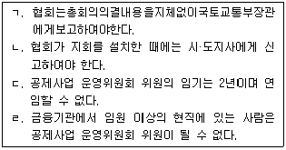
- ㄱ
- ㄱ, ㄷ
- ㄴ, ㄹ
- ㄱ, ㄷ, ㄹ
- ㄴ, ㄷ, ㄹ
(정답률: 45%)
22. 공인중개사법령상 甲과 乙이 받을 수 있는 포상금의 최대 금액은?
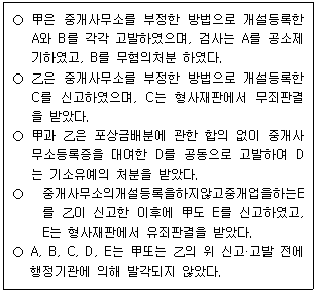
- 甲: 75만원, 乙: 50만원
- 甲: 75만원, 乙: 75만원
- 甲: 75만원, 乙: 125만원
- 甲: 125만원, 乙: 75만원
- 甲: 125만원, 乙: 125만원
(정답률: 48%)
23. 공인중개사법령상 중개업소를 수행하는 소속공인중개사의 자격정지에 관한 설명으로 옳은 것은?
- 거래계약서에 서명 및 날인을 하지 아니한 경우는 자격정지 사유에 해당한다.
- 중개대상물 확인·설명서를 교부하지 아니한 경우는 자격정지사유에 해당한다.
- 전속 중개 계약서에 의하지 아니하고 전속중개계약을 체결한 경우는 자격정지 사유에 해당한다.
- 시장·군수 또는 구청장은 공인중개사 자격정지사유 발생시 6개월의 범위안에서 기간을 정하여 그 자격을 정지할 수 있다.
- 자격정지기간은 2분의 1의 범위 안에서 가중 또는 감경할 수 있으며, 가중하여 처분하는 때에는 9개월로 할 수 있다.
(정답률: 44%)
24. 공인중개사법령상 개업공인중개사 중개사무소의 개설등록을 취소하여야 하는 경우를 모두 고른 것은?
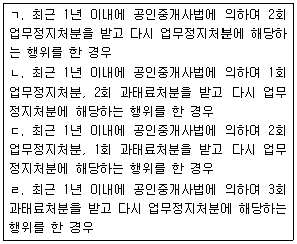
- ㄱ
- ㄱ, ㄷ
- ㄴ, ㄹ
- ㄷ, ㄹ
- ㄱ, ㄴ, ㄷ
(정답률: 47%)
25. 공인중개사법령상 개업공인중개사의 금지행위에 해당하는 것을 모두 고른 것은?(다툼이 있으면 판례에 따름)
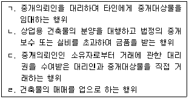
- ㄱ, ㄴ
- ㄷ, ㄹ
- ㄱ, ㄴ, ㄹ
- ㄱ, ㄷ, ㄹ
- ㄴ, ㄷ, ㄹ
(정답률: 25%)
26. 공인중개사법령상 공인중개사의 자격취소에 관한 설명으로 옳은 것은?
- 공인중개사 자격취소처분을 받은 개업공인중개사는 중개사무소의 소재지를 관할하는 시·도지사에게 공인중개사자격증을 반납해야 한다.
- 부정한 방법으로 공인중개사의 자격을 취득한 경우 자격취소사유에 해당하며, 1년 이하의 징역 또는 1천만원 이하의 벌금에 처해진다.
- 시·도지사는 공인중개사의 자격취소처분을 한 때에는 7일 이내에 이를 국토교통부장관에게 보고해야 한다.
- 자격증을 교부한 시·도지사와 공인중개사 사무소의 소재지를 관할하는 시·도지사가 다른 경우, 자격증을 교부한 시·도지사가 자격취소처분에 필요한 절차를 이행한다.
- 공인중개사가 자격정지처분을 받고 그 정지기간 중에 다른 개업공인중개사의 소속공인중개사가 된 경우 자격취소사유가 된다.
(정답률: 48%)
27. 공인중개사법령상 수수료납부 대상자에 해당하는 것은 모두 몇 개인가?
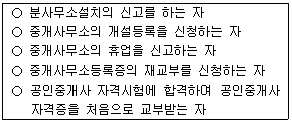
- 1개
- 2개
- 3개
- 4개
- 5개
(정답률: 53%)
28. 부동산 거래신고에 관한 법령상 부동산 거래신고에 관한 설명으로 틀린 것은?
- 공인중개사법에 따라 거래계약서를 작성·교부한 개업공인중개사는 부동산 거래신고를 할 의무를 부담한다.
- 거래당사자 일방이 부동산 거래신고를 거부하는 경우 다른 당사자는 국토교통부령에 따라 단독으로 신고할 수 있다.
- 개업 공인중개사에게 거짓으로 부동산 거래 신고를 하도록 요구한 자는 과태료 부과 대상자가 된다.
- 등록관청은 부동산 거래신고의 내용에 누락이 있는 경우 신고인에게 신고 내용을 보완하게 할 수 있다.
- 등록관청의 요구에도 거래대금 지급을 증명할 수 있는 자료를 제출하지 아니한 자에게는 해당 부동산에 대한 취득세의 3배 이하에 상당하는 금액의 과태료가 부과된다.
(정답률: 48%)
29. 개업공인중개사 甲이 乙의 일반주택을 6천만원에 매매를 중개한 경우와 甲이 위 주택을 보증금 1천 5백만원, 월차임 30만원, 계약기간 2년으로 임대차를 중개한 경우를 비교했을 때, 甲이 乙에게 받을 수 있는 중개보수 최고한도액의 차이는?
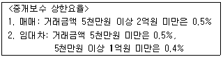
- 0원
- 75,000원
- 120,000원
- 180,000원
- 225,000원
(정답률: 44%)
30. 공인중개사법령상 개업공인중개사가 주거용 건축물의 중개대상물 확인·설명서에 기재해야 할 기본 확인사항 중 입지조건에 해당하지 않는 것은?
- 공원
- 대중교통
- 주차장
- 교육시설
- 도로와의 관계
(정답률: 52%)
31. 개업공인중개사가 보증금 5천만원, 월차임 1백만원으로 하여 「상가건물 임대차보호법」이 적용되는 상가건물의 임대차를 중개하면서 임차인에게 설명한 내용으로 옳은 것은?
- 임차인의 계약갱신요구권은 전체 임대차기간이 2년을 초과하지 아니 하는 범위에서만 행사할 수 있다.
- 임대인의 차임증액청구가 인정되더라도 10만원까지만 인정된다.
- 임차인의 차임 연체액이 2백만원에 이르는 경우 임대인은 계약을 해지할 수 있다.
- 상가건물이 서울특별시에 있는 경우 그 건물의 경매 시 임차인은 2천 5백만원을 다른 담보권자보다 우선하여 변제받을 수 있다.
- 임차인이 임대인의 동의 없이 건물의 전부를 전대한 경우 임대인은 임차인의 계약갱신요구를 거절할 수 있다.
(정답률: 40%)
32. 개업공인중개사가 중개의뢰인에게 중개대상물에 대하여 설명한 내용으로 옳은 것을 모두 고른 것은?(다툼이 있으면 판례에 따름)
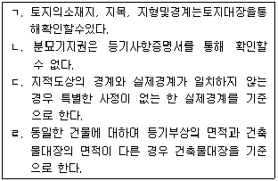
- ㄱ, ㄷ
- ㄴ, ㄹ
- ㄱ, ㄴ, ㄷ
- ㄱ, ㄷ, ㄹ
- ㄴ, ㄷ, ㄹ
(정답률: 24%)
33. 개업공인중개사가 보증금 1억 2천만원으로 주택임대차를 중개하면서 임차인에게 설명한 내용으로 옳은 것은?(다툼이 있으면 판례에 따름)
- 주택을 인도받고 주민등록을 마친 때에는 확정일자를 받지 않더라도 주택의 경매 시 후순위저당권자보다 우선하여 보증금을 변제받는다.
- 주택 소재지가 대구광역시인 경우 보증금 중 2천만원에 대해서는 최우선변제권이 인정된다.
- 다세대 주택인 경우 전입신고 시 지번만 기재하고 동·호수는 기재하지 않더라도 대항력을 인정받는다.
- 대항력을 갖춘 임차인이라도 저당권설정 등기 이후 증액된 임차보증금에 관하여는 저당권에 기해 주택을 경락 받은 소유자에게 대항할 수 없다.
- 확정일자를 받은 후 주택의 인도와 전입신고를 하면 그 신고일이 저당권설정등기일과 같아도 임차인이 저당권자에 우선한다.
(정답률: 45%)
34. 「공인중개사의 매수신청대리인 등록 등에 관한 규칙」의 내용으로 옳은 것은?
- 중개사무소의 개설등록을 하지 않은 공인중개사라도 매수신청대리인으로 등록할 수 있다.
- 매수신청 대리인으로 등록된 개업 공인중개사는 매수신청 대리행위를 함에 있어 매각 장소 또는 집행 법원에 중개보조원을 대리출석하게 할 수 있다.
- 매수신청 대리인이 되고자 하는 법인인 개업 공인중개사는 주된 중개사무소가 있는 곳을 관할하는 지방법원장에게 매수신청 대리인 등록을 해야 한다.
- 매수신청 대리인으로 등록된 개업 공인중개사는 매수신청 대리의 위임을 받은 경우 법원의 부당한 매각허가 결정에 대하여 항고할 수 있다.
- 매수신청대리인으로 등록된 개업공인중개사는 본인의 인감증명서가 첨부된 위임장과 매수신청대리인등록증 사본을 한번 제출하면 그 다음날부터는 대리행위마다 대리권을 중명할 필요가 없다.
(정답률: 40%)
35. 甲은 乙과 乙소유 부동산의 매매계약을 체결하면서 세금을 줄이기 위해 甲과 丙간의 명의신탁약정에 따라 丙명의로 소유권이전등기를 하기로 하였다. 丙에게 이전등기가 이루어질 경우에 대하여 개업공인중개사가 甲과 乙에게 설명한 내용으로 옳은 것은?(다툼이 있으면 판례에 따름)
- 계약명의신탁에 해당한다.
- 丙명의의 등기는 유효하다.
- 丙명의로 등기가 이루어지면 소유권은 甲에게 귀속된다.
- 甲은 매매계약에 기하여 乙에게 소유권이전등기를 청구할 수 있다.
- 丙이 소유권을 취득하고 甲은 丙에게 대금 상당의 부당이득반환청구권을 행사할 수 있다.
(정답률: 17%)
36. 개업공인중개사가 농지를 취득하려는 중개의뢰인에게 설명한 내용으로 틀린 것은?
- 주말·체험영농을 위해 농지를 소유하는경우 한 세대의 부부가 각각 1천m2미만으로 소유할 수 있다.
- 농업경영을 하려는 자에게 농지를 임대하는 임대차계약은 서면계약을 원칙으로 한다.
- 농업법인의 합병으로 농지를 취득하는 경우 농지취득자격 증명을 발급받지 않고 농지를 취득할 수 있다.
- 징집으로 인하여 농지를 임대하면서 임대차기간을 정하지 않은 경우 3년으로 약정된 것으로 본다.
- 농지전용허가를 받아 농지를 소유하는 자가 취득한 날부터 2년 이내에 그 목적사업에 착수하지 않으면 해당농지를 처분할 의무가 있다.
(정답률: 47%)
37. 개업공인중개사가 외국인에게 「외국인토지법」을 설명한 내용으로 옳은 것은?
- 사원 또는 구성원의 2분의 1 이상이 대한민국 국적을 보유하지 않은 법인 또는 단체는 외국인토지법상 외국인에 해당한다.
- 외국인이 대한민국 안의 토지를 취득하는 계약을 체결하였을 때에는 계약체결일부터 30일 이내에 신고해야 한다.
- 외국인이 법인의 합병 등 계약 외의 원인으로 대한민국 안의 토지를 취득한 경우 그 취득한 날부터 60일 이내에 신고해야 한다.
- 부동산 거래신고에 관한 법률에 따라 부동산거래의 신고를 한 경우에도 외국인토지법에 따라 매매계약일부터 60일 이내에 신고해야 한다.
- 대한민국 안의 토지를 가지고 있는 대한민국 국민이 외국인으로 변경되고 그 외국인이 해당 토지를 계속 보유하려는 경우 신고 의무가 없다.
(정답률: 38%)
38. 다음 ( )에 들어갈 금액으로 옳은 것은?
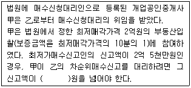
- 2천만
- 2억
- 2억 2천만
- 2억 2천 5백만
- 2억 3천만
(정답률: 46%)
39. 개업공인중개사가 「장사 등에 관한 법률」에 대해 중개의뢰인에게 설명한 것으로 틀린 것은?
- 개인묘지는 20m2를 초과해서는 안된다.
- 매장을 한 자는 매장 후 30일 이내에 매장지를 관할하는 시장등에게 신고해야 한다.
- 가족묘지란 민법에 따라 친족관계였던 자의 분묘를 같은 구역 안에 설치하는 묘지를 말한다.
- 시장등은 묘지의 설치·관리를 목적으로 민법에 따라 설립된 재단법인에 한정하여 법인묘지의 설치·관리를 허가할 수 있다.
- 설치기간이 끝난 분묘의 연고자는 설치기간이 끝난 날부터 1년 이내에 해당 분묘에 설치된 시설물을 철거하고 매장된 유골을 화장하거나 봉안해야 한다.
(정답률: 43%)
40. 부동산 거래신고에 관한 법령상 부동산거래계약 신고서의 작성방법으로 옳은 것을 모두 고른 것은?(오류 신고가 접수된 문제입니다. 반드시 정답과 해설을 확인하시기 바랍니다.)
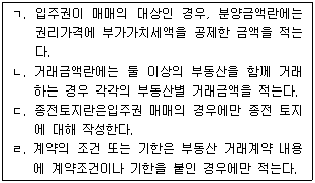
- ㄱ, ㄷ
- ㄴ, ㄹ
- ㄱ, ㄴ, ㄹ
- ㄴ, ㄷ, ㄹ
- ㄱ, ㄴ, ㄷ, ㄹ
(정답률: 38%)
2과목: 임의구분
41. 공간정보의 구축 및 관리 등에 관한 법령상 지목의 구분, 표기방법, 설정방법 등에 관한 설명으로 틀린 것은?
- 지목을 지적도 및 임야도에 등록하는 때에는 부호로 표기하여야 한다.
- 온수·약수·석유류 등을 일정한 장소로 운송하는 송수관·송유관 및 저장시설의 부지의 지목은 “광천지”로 한다.
- 필지마다 하나의 지목을 설정하여야 한다.
- 1필지가 둘 이상의 용도로 활용되는 경우에는 주된 용도에 따라 지목을 설정하여야 한다.
- 토지가 일시적 또는 임시적인 용도로 사용될 때에는 지목을 변경하지 아니한다.
(정답률: 43%)
42. 공간정보의 구축 및 관리 등에 관한 법령상 지목의 구분으로 틀린 것은?
- 학교의 교사(校舍)와 이에 접속된 체육장 등 부속시설물의 부지의 지목은 “학교용지”로 한다.
- 물건 등을 보관하거나 저장하기 위하여 독립적으로 설치된 보관시설물의 부지와 이에 접속된 부속시설물의 부지의 지목은 “창고용지”로 한다.
- 사람의 시체나 유골이 매장된 토지, 「장사 등에 관한 법률」제2조 제 9호에 다른 봉안시설과 이에 접속된 부속시설물의 부지 및 묘지의 관리를 위한 건축물의 부지의 지목은 “묘지”로 한다.
- 교통운수를 위하여 일정한 궤도 등의 설비와 형태를 갖추어 이용되는 토지와 이에 접속된 역사(驛舍)·차고·발전시설 및 공작창(工作廠) 등 부속시설물의 부지의 지목은 “철도용지”로 한다.
- 육상에 인공으로 조성된 수산생물의 번식 또는 양식을위한 시설을 갖춘 부지와 이에 접속된부속시설물의 부지의 지목은“양어장”으로 한다.
(정답률: 41%)
43. 경계점좌표등록부에 등록하는 지역에서 1필지의 면적측정을 위해 계산한 값이 1,029.551m2 인 경우 토지대장에 등록할 면적으로 옳은 것은?
- 1,029.55m2
- 1,029.56m2
- 1,029.5m2
- 1,029.6m2
- 1,030.0m2
(정답률: 36%)
44. 공간정보의 구축 및 관리 등에 관한 법령상 지상 경계의 구분 및 결정기준 등에 관한 설명으로 틀린 것은?
- 토지의지상경계는둑, 담장이나그밖에구획의목표가될만한구조물 및 경계점표지 등으로 구분한다.
- 토지가 해면 또는 수면에 접하는 경우 평균해수면이 되는 선을 지상 경계의 결정기준으로 한다.
- 분할에 따른 지상경계는 지상 건축물을 걸리게 결정해서는 아니 된다. 다만, 법원의 확정판결이 있는 경우에는 그러하지 아니하다.
- 매매 등을 위하여 토지를 분할하려는 경우 지상 경계점에 경계점표지를 설치하여 측량할 수 있다.
- 공유수면매립지의 토지 중 제방 등을 토지에 편입하여 등록하는 경우 바깥쪽 어깨부분을 지상 경계의 결정기준으로 한다.
(정답률: 41%)
45. 공간정보의 구축 및 관리 등에 관한 법령상 지번부여에 관한 설명이다. ( )안에 들어갈 내용으로 옳은 것은?
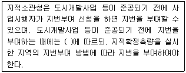
- 사업계획도
- 사업인가서
- 지적도
- 토지대장
- 토지분할조서
(정답률: 40%)
46. 공간정보의 구축 및 관리 등에 관한 법령상 중앙지적위원회의 구성 및 회의 등에 관한 설명으로 틀린 것은?
- 위원장은 국토교통부의 지적업무 담당 국장이, 부위원장은 국토교통부의 지적업무 담당 과장이 된다.
- 중앙지적 위원회는 관계인을 출석하게 하여 의견을 들을 수 있으며, 필요하면 현지조사를 할 수 있다.
- 중앙지적위원회는 위원장 1명과 부위원장 1명을 포함하여 5명 이상 10명 이하의 위원으로 구성한다.
- 중앙지적위원회의 회의는 재적위원 과반수의 출석으로 개의(開議)하고, 출석위원 과반수의 찬성으로 의결한다.
- 위원장이 중앙지적위원회의 회의를 소집할 때에는 회의 일시·장소 및 심의 안건을 회의 7일 전까지 각 위원에서 서면으로 통지하여야 한다.
(정답률: 32%)
47. 공간정보의 구축 및 관리 등에 관한 법령상 지적공부와 등록사항의 연결이 틀린 것은?
- 토지대장 - 토지의 소재, 토지의 고유번호
- 임야대장 - 지번, 개별공시지가와 그 기준일
- 지적도 - 경계, 건축물 및 구조물 등의 위치
- 공유지연명부 - 소유권 지분, 전유부분의 건물표시
- 대지권등록부 - 대지권 비율, 건물의 명칭
(정답률: 31%)
48. 공간정보의 구축 및 관리 등에 관한 법량상 부동산종합공부에 관한 설명으로 틀린 것은?
- 부동산종합공부를 열람하거나 부동산종합공부 기록사항의 전부 또는 일부에 관한 증명서를 발급받으려는 자는 지적소관청이나 읍·면·동의 장에게 신청할 수 있다.
- 지적소관청은 부동산종합공부의 등록사항정정을 위하여 등록사항 상호 간에 일치하지 아니하는 사항을 확인 및 관리하여야 한다.
- 토지소유자는 부동산종합공부의 토지의 표시에 관한 사항(「공간정보의 구축 및 관리 등에 관한 법률」에 따른 지적공부의 내용)의 등록 사항에 잘못이 있음을 발견하면 지적소관청이나 읍·면·동의 장에게 그 정정을 신청할 수 있다.
- 토지의 이용 및 규제에 관한 사항(「토지이용규제 기본법」제10조에 다른 토지이용계획확인서의 내용)은 부동산종합공부의 등록사항이다.
- 지적소관청은 부동산종합공부의 등록사항 중 등록사항 상호 간에 일치하지 아니하는 사항에 대해서는 등록사항을 관리하는 기관의 장에게 그 내용을 통지하여 등록사항정정을 요청할 수 있다.
(정답률: 38%)
49. 공간정보의 구축 및 관리 등에 관한 법량상 경계점좌표등록부의 등록사항으로 옳은 것만 나열한 것은?
- 지번, 토지의 이동사유
- 토지의 고유번호, 부호 및 부호도
- 경계, 삼각점 및 지적기준점의 위치
- 좌표, 건축물 및 구조물 등의 위치
- 면적, 필지별 경계점좌표등록부의 장번호
(정답률: 36%)
50. 공간정보의 구축 및 관리 등에 관한 법량상 축척변경위원회의 심의·의결사항으로 틀린 것은?
- 축척변경 시행계획에 관한 사항
- 지번별 제곱미터당 금액의 결정에 관한 사항
- 축척변경 승인에 관한 사항
- 청산금의 산정에 관한 사항
- 청산금의 이의신청에 관한 사항
(정답률: 31%)
51. 공간정보의 구축 및 관리 등에 관한 법령상 토지의 등록, 지적공부 등에 관한 설명으로 틀린 것은?
- 지번은 지적소관청이 지번부여지역별로 차례대로 부여한다.
- 지적소관청은 도시개발사업의 시행 등의 사유로 지번에 결번이 생긴 때에는 지체 없이 그 사유를 결번대장에 적어 영구히 보존하여야 한다.
- 지적소관청은 토지의 이동에 따라 지상경계를 새로 정한 경우에는 지상 경계점 등록부를 작성·관리하여야 한다.
- 합병에 따른 경계·좌표 또는 면적은 지적측량을 하여 결정한다.
- 지적공부를 정보처리시스템을 통하여 기록·저장한 경우 관할 시·도지사, 시장·군수 또는 구청장은 그 지적 공부를 지적정보관리체계에 영구히 보존하여야 한다.
(정답률: 35%)
52. 공간정보의 구축 및 관리 등에 관한 법령상 토지의 이동 신청 및 지적관리 등에 관한 설명이다. ( )안에 들어갈 내용으로 옳은 것은?
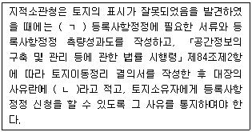
- ㄱ : 지체 없이, ㄴ : 등록사항정정 대상토지
- ㄱ : 지체 없이, ㄴ : 지적불부합 토지
- ㄱ : 7일 이내, ㄴ : 토지표시정정 대상토지
- ㄱ : 30일 이내, ㄴ : 지적불부합 토지
- ㄱ : 30일 이내, ㄴ : 등록사항정정 대장토지
(정답률: 39%)
53. A건물에 대해 甲이 소유권이전등기청구권보전 가등기를 2016. 3. 4.에 하였다. 甲이 위 가등기에 의해 2016. 10. 18. 소유권이전의 본등기를 한 경우, A건물에 있던 다음 등기 중 직권으로 말소하는 등기는?
- 甲에게 대항할 수 있는 주택임차권에 의해 2016. 7. 4.에 한 주택임차권등기
- 2016. 3. 15. 등기된 가압류에 의해 2016. 7. 5.에 한강제 경매개시결정 등 기
- 2016. 2. 5. 등기된 근저당권에 의해 2016. 7. 6.에 한 임의경매개시결정 등 기
- 위 가등기상 권리를 목적으로 2016. 7. 7.에 한 가처분등기
- 위 가등기상 권리를 목적으로 한 2016. 7. 8.에 한 가압류등기
(정답률: 33%)
54. 신탁등기에 관한 설명으로 틀린 것은?
- 신탁등기시 수탁자가 갑과 을인 경우, 등기관은 신탁재산이 갑과 을의 합유인 뜻을 기록해야 한다.
- 등기관이 수탁자의 고유재산으로 된 뜻의 등기와 함께 신탁등기의 말소등기를 할 경우, 하나의 순위번호를 사용한다.
- 수탁자의 신탁등기신청은 해당 부동산에 관한 권리의 설정등기, 보존등기, 이전등기 또는 변경등기의 신청과 동시에 해야 한다.
- 신탁재산의 일부가 처분되어 권리이전등기와 함께 신탁등기의 변경등기를 할 경우, 각기 다른 순위 번호를 사용한다.
- 신탁등기의 말소등기신청은 권리의 이전 또는 말소등기나 수탁자의 고유재산으로 된 뜻의 등기신청과 함께 1건의 신청정보로 일괄하여해야 한다.
(정답률: 21%)
55. 부동산등기용등록번호에 관한 설명으로 옳은 것은?
- 법인의 등록번호는 주된 사무소 소재지를 관할하는 시장, 군수 또는 구청장이 부여한다.
- 주민등록번호가 없는 재외국민의 등록번호는 대법원 소재지 관할 등기소의 등기관이 부여한다.
- 외국인의 등록번호는 체류지를 관할하는 시장, 군수 또는 구청장이 부여한다.
- 법인 아닌 사단의 등록번호는 주된 사무소 소재지 관할 등기소의 등 기관이 부여한다.
- 국내에 영업소나 사무소의 설치 등기를 하지 아니한 외국법인의 등록번호는 국토교통부장관이 지정·고시한다.
(정답률: 21%)
56. 등기제도에 관한 설명으로 옳은 것은?
- 등기기록에 기록되어 있는 사항은 이해관계인에 한해 열람을 청구할 수 있다.
- 등기관이등기를마친경우, 그 등기는 등기를 마친때 부터 효력을 발생한다.
- 전세권의 존속기간이 만료된 경우, 전세금 반환채권의 일부 양도를 원인으로 한 전세권 일부 이전등기도 가능하다.
- 말소된 등기의 회복을 신청할 때에 등기상 이해관계 있는 제3자가 있는 경우, 그 제3자의 승낙은 필요하지 않다.
- 등기소에 보관 중인 등기신청서는 법관이 발부한 영장에 의해 압수하는 경우에도 등기소 밖으로 옮기지 못한다.
(정답률: 28%)
57. 가등기에 관한 설명으로 옳은 것은?
- 소유권이전등기청구권이 정지조건부일 경우, 그 청구권 보전을 위한 가등기를 신청할 수 없다.
- 가등기를 명하는 법원의 가처분명령이 있는 경우, 등기관은 법원의 촉탁에 따라 그 가등기를 한다.
- 가등기 신청시 그 가등기로 보전하려고 하는 권리를 신청 정보의 내용으로 등기소에 제공할 필요는 없다.
- 가등기 권리자가 가등기를 명하는 가처분명령을 신청할 경우, 가등기 의무자의 주소지를 관할하는 지방법원에 신청한다.
- 가등기에 관해 등기상 이해관계 있는 자가 가등기명의인의 승낙을 받은 경우, 단독으로 가등기의 말소를 신청할 수 있다.
(정답률: 25%)
58. 등기부 등에 관한 설명으로 틀린 것은?
- 폐쇄한 등기기록은 영구히 보존해야 한다.
- A토지를 B토지에 합병하여 등기관이 합필등기를 한 때에는 A토지에 관한 등기기록을 폐쇄해야 한다.
- 등기부부본자료는 등기부와 동일한 내용으로 보조기억장치에 기록된 자료이다.
- 구분건물등기기록에는 표제부를 1동의 건물에 두고 전유부분에는 갑구와 을구만 둔다.
- 등기사항증명서 발급신청시 매매목록은 그 신청이 있는 경우에만 등기사항증명서에 포함하여 발급한다.
(정답률: 33%)
59. 등기절차에 관한 설명으로 옳은 것은?
- 등기관의 처분에 대한 이의는 집행정지의 효력이 있다.
- 소유권이전등기신청시등기의무자의주소증명정보는등기소에제공하지 않는다.
- 지방자치단체가등기권리자인경우, 등기관은등기필정보를작성·통지하지 않는다.
- 자격자대리인이아닌사람도타인을대리하여전자신청을할수있다.
- 전세권설정범위가건물전부인경우, 전세권설정등기신청시건물도면을 첨부정보로서 등기소에 제공해야 한다.
(정답률: 28%)
60. 단독으로 신청할 수 있는 등기를 모두 고른것은?(단, 판결에 의한 신청은 제외)
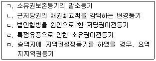
- ㄱ, ㄷ
- ㄱ, ㄹ
- ㄴ, ㄹ
- ㄱ, ㄷ, ㅁ
- ㄷ, ㄹ, ㅁ
(정답률: 19%)
61. 등기사무에 관하여 옳은 것을 모두 고른 것은?
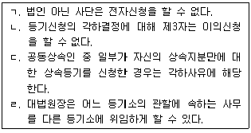
- ㄱ, ㄷ
- ㄴ, ㄹ
- ㄱ, ㄴ, ㄷ
- ㄴ, ㄷ, ㄹ
- ㄱ, ㄴ, ㄷ, ㄹ
(정답률: 29%)
62. 소유권등기에 관한 내용으로 틀린 것은?
- 민법상 조합은 그 자체의 명의로 소유권등기를 신청할 수 없다.
- 수용에 의한 소유권이전등기를 할 경우, 그 부동산의 처분제한등기와 그 부동산을 위해 존재하는 지역권등기는 직권으로 말소할 수 없다.
- 멸실된 건물의 소유자인 등기명의인이 멸실 후 1개월 이내에 그 건물의 멸실등기를 신청하지 않는 경우, 그 건물대지의 소유자가 대위하여 멸실등기를 신청할 수 있다.
- 집합건물의 규약상 공용부분에 대해 공용부분이라는 뜻을 정한 규약을 폐지한 경우, 공용부분의 취득자는 지체없이 소유권보존등기를 신청해야 한다.
- 수용에 의한 소유권이전등기 완료 후 수용재결의 실효로 그 말소등기를 신청하는 경우, 피수용자 단독으로 기업자명의의 소유권이전등기 말소등기신청을 할 수 없다.
(정답률: 12%)
63. 소유권보존등기에 관한 설명으로 틀린 것은?(다툼이 있으면 판례에 따름)
- 甲이 신축한 미등기건물을 甲으로부터 매수한 乙은 甲명의로 소유권 보존등기 후 소유권이전등기를 해야 한다.
- 미등기 토지에 관한 소유권보존등기는 수용으로 인해 소유권을 취득했음을 증명하는 자도 신청할 수 있다.
- 미등기 토지에 대해 소유권 처분제한의 등기 촉탁이 있는 경우, 등기관이 직권으로 소유권보존등기를 한다.
- 본 건물의 사용에만 제공되는 부속건물도 소유자의 신청에 따라 본 건물과 별도의 독립건물로 등기할 수 있다.
- 토지대장상 최초의 소유자인 甲의 미등기토지가 상속된 경우, 甲명의로 보존등기를 한 후 상속인명의로 소유권이전등기를 한다.
(정답률: 16%)
64. 등기에 관한 내용으로 틀린 것은?
- 등기관이 소유권일부이전등기를 할 경우, 이전되는 지분을 기록해야 한다.
- 주택임차권등기명령에 따라 임차권등기가 된 경우, 그 등기에 기초한 임차권이전등기를 할 수 있다.
- 일정한 금액을 목적으로 하지 않는 채권의 담보를 위한 저당권설정등 기신청의 경우, 그 채권의 평가액을 신청정보의 내용으로 등기소에 제공해야 한다.
- 지역권설정등기시 승역지소유자가 공작물의 설치의무를 부담하는 약정을 한 경우, 등기원인에 그 약정이 있는 경우에만 이를 기록한다.
- 구분건물을 신축하여 양도한 자가 그 건물의 대지사용권을 나중에 취득해 이전하기로 약정한 경우, 현재 구분건물의 소유명의인과 공동으로 대지사용권에 관한 이전등기를 신청할 수 있다.
(정답률: 24%)
65. 지방세기본법상 가산세에 관한 내용으로 옳은 것은?
- 무신고가산세(사기나그 밖의부정한행위로인하지않은 경우): 납부세액의 100분의 20에 상당하는 금액
- 무신고가산세(사기나 그 밖의 부정행위로 인한 경우): 납부세액의 100분의 50에 상당하는 금액
- 과소신고가산세(사기나 그 밖의 부정한 행위로 인하지 않은경우): 과소신고분 세액의 100분의 20에 상당하는 금액
- 과소신고가산세(사기나 그 밖의 부정행위로 인한 경우): 부정과소신고분 세액의 100분의 50에 상당하는 금액
- 납부불성실가산세:납부하지 아니한 세액의 100분의 20에 상당하는 금액
(정답률: 29%)
66. 지방세법상 사실상의 취득가격 또는 연부금액을 취득세의 과세표준으로 하는 경우 취득가격 또는 연부금액에 포함되지 않는 것은?(단, 특수관계인과의 거래가 아니며, 비용 등은 취득시기 이전에 지급되었음)
- 전기사업법에 따라 전기를 사용하는 자가 분담하는 비용
- 건설자금에 충당한 차입금의 이자
- 법인이 연부로 취득하는 경우 연부 계약에 따른 이자상당액
- 취득에 필요한 용역을 제공받는 대가로 지급하는 용역비
- 취득대금 외에 당사자의 약정에 따른 취득자 조건 부담액
(정답률: 27%)
67. 지방세법상 다음의 재산세 과세표준에 적용되는 표준세율중 가장 낮은 것은?
- 과세표준 5천만원인 종합합산과세대상 토지
- 과세표준 2억원인 별도합산과세대상 토지
- 과세표준 20억원인 분리과세대상 목장용지
- 과세표준 6천만원인 주택(별장 제외)
- 과세표준 10억원인 분리과세대상 공장용지
(정답률: 29%)
68. 지방세법상 재산세 과세대상에 대한 표준세율 적용에 관한 설명으로 틀린 것은?
- 납세의무자가 해당 지방자치단체 관할구역에 소유하고 있는 종합합산과세대상 토지의 가액을모두 합한 금액을 과세표준으로 하여 종합합산과세대상의 세율을 적용한다.
- 납세의무자가 해당 지방자치단체 관할구역에 소유하고 있는 별도 합산과세대상토지의 가액을 모두 합한 금액을 과세표준으로 하여 별도 합산과세대상의 세율을 적용한다.
- 분리과세대상이 되는 해당 토지의 가액을 과세표준으로 하여 분리과세대상의 세율을 적용한다.
- 납세의무자가 해당 지방자치단체 관할구역에 2개 이상의 주택을 소유하고 있는 경우 그주택의가액을모두합한금액을과세표준으로하여 주택의 세율을 적용한다.
- 주택에 대한 토지와 건물의 소유자가 다를 경우 해당 주택의 토지와 건물의 가액을 합산한 과세표준에 주택의 세율을 적용한다.
(정답률: 26%)
69. 소득세법상 국외자산의 양도에 대한 양도소득세 과세에 있어서 국내자산의 양도에 대한 양도소득세 규정 중 준용하지 않는 것은?
- 비과세 양도소득
- 양도소득과세표준의 계산
- 기준시가의 산정
- 양도소득의 부당행위계산
- 양도 또는 취득의 시기
(정답률: 21%)
70. 소득세법상 거주자의 양도소득세 비과세에 관한 설명으로 옳은 것은?
- 국내에 1주택만을 보유하고 있는 1세대가 해외이주로 세대전원이 출국하는 경우 출국일로부터 3년이 되는날 해당주택을 양도하면 비과세 된다.
- 법원의 결정에 의하여 양도 당시 취득에 관한 등기가 불가능한 미등기 주택은 양도소득세 비과세가 배제되는 미등기 양도자산에 해당하지 않는다.
- 직장의 변경으로 세대전원이 다른 시로 주거를 이전하는 경우 6개월간 거주한 1주택을 양도하면 비과세된다.
- 양도 당시 실지거래가액이 10억원인 1세대 1주택의 양도로 발생하는 양도차익 전부가 비과세된다.
- 농지를 교환할 때 쌍방 토지가액의 차액이 가액이 큰 편의 3분의 1인 경우 발생하는 소득은 비과세된다.
(정답률: 22%)
71. 소득세법상 거주자의 양도소득과세표준의 신고 및 납부에 관한 설명으로 옳은 것은?
- 2016년 3월 21일에 주택을 양도하고 잔금을 청산한 경우 2016년 6월 30일에 예정신고할 수 있다.
- 확정신고납부시 납부할 세액이 1천 6백만원인 경우 6백만원을 분납할 수 있다.
- 예정신고납부시 납부할 세액이 2천만원인 경우 분납할 수 없다.
- 양도차손이 발생한 경우 예정신고하지 아니한다.
- 예정신고하지 않은 거주자가 해당 과세기간의 과세표준이 없는 경우 확정신고하지 아니한다.
(정답률: 27%)
72. 소득세법상 등기된 국내 부동산에 대한 양도소득과세표준의 세율에 관한 내용으로 옳은 것은?
- 1년 6개월 보유한 1주택: 100분의 40
- 2년 1개월 보유한 상가건물: 100분의 40
- 10개월 보유한 상가건물: 100분의 50
- 6개월 보유한 1주택: 100분의 30
- 1년 8개월 보유한 상가건물: 100분의 50
(정답률: 25%)
73. 소득세법상 양도소득세에 관한 설명으로 옳은 것은?
- 거주자가 국외 토지를 양도한 경우 양도일까지 계속해서 10년간 국내에 주소를 두었다면 양도소득과세표준을 예정신고하여야 한다.
- 비거주자가 국외 토지를 양도한 경우 양도소득세 납부의무가 있다.
- 거주자가 국내 상가건물을 양도한 경우 거주자의 주소지와 상가건물의 소재지가 다르다면 양도소득세 납세지는 상가건물의 소재지이다.
- 비거주자가 국내 주택을 양도한 경우 양도소득세 납세지는 비거주자의 국외 주소지이다.
- 거주자가 국외 주택을 양도한 경우 양도일까지 계속해서 5년간 국내에 주소를 두었다면 양도소득금액 계산 시 장기보유특별공제가 적용된다.
(정답률: 24%)
74. 소득세법상 사업소득이 있는 거주자가 실지거래가액에 의해 부동산의 양도차익을 계산하는 경우 양도가액에서 공제할 자본적지출액 또는 양도비에 포함되지 않는 것은?(단, 자본적지출액에 대해서는 법령에 따른 증명서류가 수취·보관되어 있음)
- 자산을 양도하기 위하여 직접 지출한 양도소득세 과세표준신고서 작성 비용
- 납부의무자와 양도자가 동일한 경우 재건축초과이익 환수에 관한 법률에 따른 재건축부담금
- 양도자산의 이용편의를 위하여 지출한 비용
- 양도자산의 취득 후 쟁송이 있는 경우 그 소유권을 확보하기 위하여 직접소요된 소송비용으로서 그 지출한 연도의 각 사업소득금액계산시 필요경비에 산입된 금액
- 자산을 양도하기 위하여 직접 지출한 공증비용
(정답률: 26%)
75. 종합부동산세법상 납부의무 성립시기가 2016년인 종합부동산세에 관한 설명으로 옳은 것은?
- 과세기준일 현재 주택의 공시가격을 합산한 금액이 5억원인 자는 납세의무가 있다.
- 과세기준일은 7월 1일이다.
- 주택에 대한 과세표준이 5억원인 경우 적용될 세율은 1천분의 3이다.
- 관할세무서장은납부하여야 할세액이1천만원을초과하면 물납을 허가할 수 있다.
- 관할세무서장이 종합부동산세를 부과·징수하는 경우 납부고지서에 주택 및 토지로 구분한 과세표준과세액을 기재하여 납부기간 개시 5일전까지 발부하여야 한다.
(정답률: 26%)
76. 지방세법상 거주자의 국내자산 양도소득에 대한 지방소득세에 관한 설명으로 틀린 것은?
- 양도소득에 대한 개인 지방 소득세 과세표준은 종합소득 및 퇴직소득에 대한 개인 지방 소득세 과세표준과 구분하여 계산한다.
- 양도소득에 대한개인지방소득세의 세액이 2천원인 경우에는 이를 징수하지 아니한다.
- 양도소득에 대한 개인지방소득세의 공제세액이 산출세액을 초과하는 경우 그 초과금액은 없는 것으로 한다.
- 양도소득에 대한 개인지방소득세 과세표준은 소득세법상 양도소득과세표준으로 하는 것이 원칙이다.
- 소득세법상 보유기간이 8개월인 조합원입주권의 세율은 양도소득에 대한 개인지방소득세 과세표준의 1천분의 40을 적용한다.
(정답률: 24%)
77. 지방세법상 공유농지를 분할로 취득하는 경우 자기 소유지분에 대한 취득세 과세표준의 표준세율은?
- 1천분의 23
- 1천분의 28
- 1천분의 30
- 1천분의 35
- 1천분의 40
(정답률: 27%)
78. 지방세법상 재산세에 관한 설명으로 옳은 것은?
- 과세기준일은 매월 7월 1일이다.
- 주택의 정기분 납부세액이 50만 원인 경우 세액의 2분의 1은7월 16일부터 7월 31일까지, 나머지는 10월 16일부터 10월 31일까지를 납기로 한다.
- 토지의 정기분 납부세액이 9만 원인 경우 조례에 따라 납기를 7월 16일부터 7월 31일까지로 하여 한꺼번에 부과·징수할 수 있다.
- 과세 기준일 현재 공부상의 소유자가 매매로 소유권이 변동되었는데도 신고하지 아니하여 사실상의 소유자를 알 수 없는 경우 그 공부상의 소유자가 아닌 사용자에게 재산세 납부 의무가 있다.
- 지방자치단체의 장은 재산세의 납부세액이 500만원을 초과하는 경우 법령에 따라 납부할 세액의 일부를 납부기한이 지난 날부터 45일 이내에 분납하게 할 수 있다.
(정답률: 14%)
79. 지방세법상 취득세의 납세의무에 관한 설명으로 틀린 것은?
- 부동산의 취득은 민법 등 관계 법령에 따른 등기를 하지 아니한 경우라도 사실상 취득하면 취득한 것으로 본다.
- 주택법에 따른 주택조합이 해당 조합원용으로 취득하는 조합주택용부동산(조합원에게 귀속되지 아니하는 부동산은 제외)은 그 조합원이 취득한 것으로 본다.
- 직계비속이 직계존속의 부동산을 매매로 취득하는 때에 해당 직계비속의 다른 재산으로 그 대가를 지급한 사실이 입증되는 경우 유상으로 취득한 것으로 본다.
- 직계비속이 권리의 이전에 등기가 필요한 직계존속의 부동산을 서로 교환한 경우 무상으로 취득한 것으로 본다.
- 직계비속이 공매를 통하여 직계존속의 부동산을 취득하는 경우 유상으로 취득한 것으로 본다.
(정답률: 27%)
80. 지방세법상 취득세 및 등록면허세에 관한 설명으로 옳은 것은?
- 취득세 과세물건을 취득한 후 중과세 세율 적용 대상이 되었을 경우 60일 이내에 산출 세액에서 이미 납부한 세액(가산세 포함)을 공제하여 신고·납부하여야 한다.
- 취득세 과세물건을 취득한 자가 재산권의 취득에 관한사항을 등기하는 경우 등기한 후 30일 내에 취득세를 신고·납부하여야 한다.
- 부동산 거래신고 등에 관한 법률에 따른 신고서를 제출하여 같은 법에 따라 검증이 이루어진 취득에 대하여는 취득세의 과세표준을 시가표준액으로 한다.
- 부동산 가압류에 대한 등록면허세의 세율은 부동산가액의 1천 분의 2로 한다.
- 등록하려는 자가 신고의무를 다하지 아니하고 등록면허세 산출 세액을 등록하기 전까지(신고기한이 있는 경우 신고기한까지) 납부하였을 때에는 신고·납부한 것으로 본다.
(정답률: 24%)
3과목: 임의구분
81. 국토의 계획 및 이용에 관한 법령상 기반시설인 자동차정류장을 세분할 경우 이에 해당하지 않는 것은?
- 화물터미널
- 공영차고지
- 복합환승센터
- 화물자동차 휴게소
- 교통광장
(정답률: 32%)
82. 국토의 계획 및 이용에 관한 법률상 도시ㆍ군기본계획의 수립 및 정비에 관한 조문의 일부이다. ( )에 들어갈 숫자를 옳게 연결한 것은?
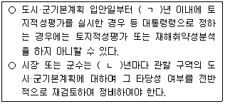
- ㄱ: 2, ㄴ: 5
- ㄱ: 3, ㄴ: 2
- ㄱ: 3, ㄴ: 5
- ㄱ: 5, ㄴ: 5
- ㄱ: 5, ㄴ: 10
(정답률: 35%)
83. 국토의 계획 및 이용에 관한 법령상 용도지역의 세분 중 '편리한 주거환경을 조성하기 위하여 필요한 지역'에 건축 할 수 있는 건축물이 아닌 것은?(단, 건축물은 4층 이하이고, 조례는 고려하지 않음)
- 동물미용실
- 기숙사
- 고등학교
- 양수장
- 단독주택
(정답률: 32%)
84. 국토의 계획 및 이용에 관한 법령상 지구단위계획에 관한 설명으로 틀린 것은?
- 지구단위계획은 도시·군관리계획으로 결정한다.
- 두 개의 노선이 교차하는 대중교통 결절지로부터 2km 이내에 위치한 지역은 지구단위계획구역으로 지정하여야 한다.
- 시·도지사는 「도시개발법」에 따라 지정된 도시개발구역의 전부 또는 일부에 대하여 지구단위계획구역을 지정할 수 있다.
- 지구단위계획의 수립기준은 국토교통부장관이 정한다.
- 「택지개발촉진법」에 따라 지정된 택지개발지구에서 시행되는 사업이 끝난후 10년이 지난 지역으로서 관계 법률에 따른 이용과 건축에 관한 계획이 수립되어 있지 않은 지역은 지구단위계획구역으로 지정하여야 한다.
(정답률: 35%)
85. 국토의 계획 및 이용에 관한 법령상 일반상업지역 내의 지구단위계획구역에서 건폐율이 60%이고 대지면적이 400m2인 부지에 건축물을 건축하려는 자가 그 부지 중 100m2를 공공시설의 부지로 제공하는 경우, 지구단위계획으로 완화 하여 적용할 수 있는 건폐율의 최대한도(%)는 얼마인가? (단, 조례는 고려하지 않으며, 건축주가 용도폐지되는 공공 시설을 무상양수 받을 경우가 아님)
- 60
- 65
- 70
- 75
- 80
(정답률: 30%)
86. 국토의 계획 및 이용에 관한 법령상 토지거래의 허가 등에 관한 설명으로 옳은 것은?
- 도시지역외의 지역에 있는 허가구역에서 90m2의 임야를 매매하는 경우에는 허가를 요하지 아니한다.
- 시·도지사는 허가구역으로 지정하려면 지방의회의 의견을 듣고 중앙도시계획위원회의 심의를 거쳐야 한다.
- 허가구역의 지정은 이를 공고하고 일반이 열람할 수 있는 날이 끝난날부터 5일 후에 그 효력이 발생한다.
- 허가 구역이 동일한 시·군 또는 구 안의 일부 지역인 경우에는시장·군수·구청장이 허가 구역을 지정한다.
- 토지거래계약에 대해 불허가처분을 받은 매도인은 90일 이내에 시장·군수 또는 구청장에게 이의를 신청할 수 있다.
(정답률: 25%)
87. 국토의 계획 및 이용에 관한 법령상 도시지역 중 건폐율의 최대한도가 낮은 지역부터 높은 지역순으로 옳게 나열한 것은?(단, 조례등 기타 강화·완화조건은 고려하지 않음)
- 전용공업지역 - 중심상업지역 - 제1종전용주거지역
- 보전녹지지역 - 유통상업지역 - 준공업지역
- 자연녹지지역 - 일반상업지역 - 준주거지역
- 일반상업지역 - 준공업지역 - 제2종일반주거지역
- 생산녹지지역 - 근린상업지역 –유통상업지역
(정답률: 33%)
88. 甲소유의 토지는 A광역시 B구에 소재한 지목이 대(垈)인 토지로서 한국토지주택공사를 사업시행자로 하는 도시·군 계획시설 부지이다. 甲의 토지에 대해 국토의 계획 및 이용에 관한 법령상 도시·군계획시설 부지의 매수청구권이 인정되는 경우, 이에 관한 설명으로 옳은 것은?(단, 도시·군계획시설의 설치의무자는 사업시행자이며, 조례는 고려하지 않음)
- 甲의 토지의 매수의무자는 B구청장이다.
- 甲이 매수청구를 할 수 있는 대상은 토지이며, 그 토지에 있는 건축물은 포함되지 않는다.
- 甲이 원하는 경우 매수의무자는 도시·군계획시설채권을 발행하여 그 대금을 지급할 수 있다.
- 매수의무자는 매수청구를 받은날부터6개월 이내에 매수여부를결정 하여 甲과 A광역시장에게 알려야 한다.
- 매수청구에 대해 매수의무자가 매수하지 아니하기로 결정한 경우 甲은 자신의 토지에 2층의 다세대주택을 건축할 수 있다.
(정답률: 19%)
89. 국토의 계획 및 이용에 관한 법령상 광역도시계획에 관한 설명으로 옳은 것은?
- 국토교통부장관이 광역계획권을 지정하려면 관계 지방 도시계획위원회의 심의를 거쳐야 한다.
- 도지사가 시장 또는 군수의 요청으로 관할 시장 또는 군수와 공동으로 광역 도시계획을 수립하는 경우에는 국토교통부장관의 승인을 받지 않고 광역도시계획을 수립할 수 있다.
- 중앙행정기관의 장은 국토교통부장관에게 광역계획권의 변경을 요청할 수 없다.
- 시장 또는 군수가 광역도시계획을수립하거나 변경하려면 국토교통부 장관의 승인을 받아야 한다.
- 광역 계획권은 인접한 둘이상의 특별시·광역시·시 또는 군의 관할구역 단위로 지정하여야 하며, 그 관할구역의 일부만을 광역 계획권에 포함시킬 수는 없다.
(정답률: 29%)
90. 국토의 계획 및 이용에 관한 법령상 기반시설부담구역에 관한 설명으로 틀린 것은?
- 법령의 개정으로 인하여 행위제한이 완화되는 지역에 대해서는 기반시설부담구역으로 지정하여야 한다.
- 녹지와 폐기물처리시설은 기반시설부담구역에 설치가 필요한 기반시설에 해당한다.
- 동일한 지역에 대해 기반시설부담구역과 개발밀도관리구역을 중복하여 지정할 수 있다.
- 기반 시설 부담구역 내에서「주택법」에 다른 리모델링을 하는 건축물은 기반 시설 설치비 용의 부과 대상이 아니다.
- 기존 건축물을 철거하고 신축하는 건축행위가 기반 시설 설치비 용의 부과 대상이 되는 경우에는 기존 건축물의 건축 연면적을 초과하는 건축행위만 부과 대상으로 한다.
(정답률: 31%)
91. 국토의 계획 및 이용에 관한 법령상 도시·군계획시설사업에 관한 설명으로 틀린 것은?
- 도시·군관리계획으로 결정된 하천의 정비사업은 도시·군계획시설사업에 해당한다.
- 한국토지주택공사가 도시·군계획시설사업의 시행자로 지정받으려면 사업 대상 토지 면적의 3분의 2 이상의 토지소유자의 동의를 얻어야 한다.
- 도시·군계획시설사업의 시행자는 도시·군계획시설사업에 필요한 토지나 건축물을 수용할 수 있다.
- 행정청인 도시·군계획시설사업의 시행자가 도시·군계획시설사업에 의하여 새로 공공시설을 설치한 경우 새로 설치된 공공시설은 그 시설을 관리할 관리청에 무상으로 귀속된다.
- 도시·군계획시설결정의 고시일로부터 20년이 지날 때까지 그 시설의 설치에 관한 도시·군계획시설사업이 시행되지 아니하는 경우, 그 도시·군계획시설결정은 그고시일로부터 20년이 되는 날의 다음날에 효력을 잃는다.
(정답률: 26%)
92. 국토의 계획 및 이용에 관한 법령상 도시·군관리계획을 입안할 때 환경성 검토를 실시하지 않아도 되는 경우에 해당하는 것만을 모두 고른 것은?
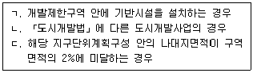
- ㄱ
- ㄷ
- ㄱ, ㄴ
- ㄴ, ㄱ
- ㄱ, ㄴ, ㄷ
(정답률: 20%)
93. 도시개발법령상 준공검사 등에 관한 설명으로 틀린 것은?
- 도시개발사업의 준공검사 전에는 체비지를 사용할 수 없다.
- 지정권자는 효율적인 준공검사를 위하여 필요하면 관계 행정기관 등에 의뢰하여 준공검사를 할 수 있다.
- 지정권자가 아닌 시행자는 도시개발사업에 관한 공사가 전부 끝나기 전이라도 공사가 끝난 부분에 관하여 준공검사를 받을 수 있다.
- 지정권자가 아닌 시행자가 도시개발사업의 공사를 끝낸 때에는 공사 완료 보고서를 작성하여 지정권자의 준공검사를 받아야 한다.
- 지정권자가 시행자인 경우 그 시행자는 도시개발사업의 공사를 완료한 때에는 공사 완료 공고를 하여야 한다.
(정답률: 27%)
94. 도시개발법령상 수용 또는 사용의 방식에 따른 사업 시행에 관한 설명으로 옳은 것은?
- 시행자가 아닌 지정권자는 도시개발사업에 필요한 토지 등을 수용할 수 있다.
- 도시개발사업을 위한 토지의 수용에 관하여 특별한 규정이 없으면 「도시 및 주거환경정비법」에 따른다.
- 수용의 대상이 되는 토지의 세부목록을 고시한 경우에는 「공익사업을 위한 토지 등의 취득 및 보상에 관한 법률」에 따른 사업인정 및 그 고시가 있었던 것으로 본다.
- 국가에 공급될 수 있는 원형지 면적은 도시개발구역 전체 토지면적의 3분의 2까지로 한다.
- 시행자가 토지 상환 채권을 발행할 경우, 그 발행 규모는 토지 상환 채권으로 상환할 토지·건축물이 도시개발사업으로 조성되는 분양토지 또는 분양 건축물 면적의 3분의 2를 초과하지 않아야 한다.
(정답률: 34%)
95. 도시개발법령상 도시개발사업 조합에 관한 설명으로 틀린 것은?
- 조합은 도시개발사업의 전부를 환지 방식으로 시행하는 경우 사업시행자가 될 수 있다.
- 조합을 설립하려면 도시개발구역의 토지 소유자 7명 이상이 정관을 작성하여 지정권자에게 조합 설립의 인가를 받아야 한다.
- 조합이 작성하는 정관에는 도시개발구역의 면적이 포함되어야 한다.
- 조합 설립의 인가를 신청하려면 국공유지를 제외한 해당 도시개발구역의 토지면적의 3분의 2 이상에 해당하는 토지 소유자와 그 구역의 토지 소유자 총수의 2분의 1 이상의 동의를 받아야 한다.
- 조합의 이사는 그 조합의 조합장을 겸할 수 없다.
(정답률: 25%)
96. 도시개발법령상 환지의 방식에 관한 내용이다. ( )에 들어갈 내용을 옳게 연결한 것은?
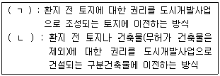
- ㄱ: 평면 환지, ㄴ: 입체 환지
- ㄱ: 평가 환지, ㄴ: 입체 환지
- ㄱ: 입체 환지, ㄴ: 평면 환지
- ㄱ: 평면 환지, ㄴ: 유동 환지
- ㄱ: 유동 환지, ㄴ: 평면 환지
(정답률: 34%)
97. 도시개발법령상 도시개발사업의 비용 부담에 관한 설명으로 틀린 것은?
- 도시개발사업에 필요한 비용은「도시개발 법」이나 다른 법률에 특별한 규정이 있는 경우를 제외하고는 시행자가 부담한다.
- 지방자치단체의 장이 발행하는 도시개발채권의 소멸시효는 상환일로부터 기산하여 원금은 5년, 이자는 2년으로 한다.
- 시행자가 지방자치단체인 경우에는 공원·녹지의 조성비 전부를 국고에서 보조하거나 융자할 수 있다.
- 시행자는 공동구를 설치하는 경우에는 다른 법률에 따라 그 공동구에 수용될 시설을 설치할 의무가 있는 자에게 공동구의 설치에 드는 비용을 부담시킬 수 있다.
- 도시개발사업에 관한 비용 부담에 대해 대도시 시장과 시·도지사 간의 협의가 성립되지 아니하는 경우에는 기획재정부장관의 결정에 따른다.
(정답률: 26%)
98. 도시개발법령상 조합인 시행자가 면적식으로 환지계획을 수립하여 환지방식에 의한 사업시행을 하는 경우, 환지계획구역의 평균 토지부담률(%)은 얼마인가?(단, 다른 조건은 고려하지 않음)
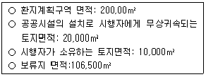
- 40
- 45
- 50
- 55
- 60
(정답률: 20%)
99. 도시 및 주거환경정비법령상 도시·주거환경정비기본계획(이하 '기본계획')의 수립에 관한 설명으로 틀린 것은?
- 기본계획의 작성방법은 국토교통부장관이 정한다.
- 대도시의 시장이 아닌 시장은 기본계획의 내용 중 단계별 정비사업추진계획을 변경하는 때에는 도지사의 승인을 얻지 않아도 된다.
- 기본계획에생활권별 기반시설설치계획이포함된 경우에는 기본계획에 포함되어야 할 사항 중 주거지 관리계획이 생략될 수 있다.
- 대도시의 시장은 지방도시계획위원회의 심의를 거치기 전에 관계 행정기관의 장과 협의하여야 한다.
- 도지사가 기본계획을 수립할 필요가 없다고 인정하는 대도시가 아닌 시는 기본계획을 수립하지 아니할 수 있다.
(정답률: 21%)
100. 도시 및 주거환경정비법령상 가로주택정비사업에 관한 설명으로 옳은 것은?
- 광역시의 군수는 정비계획을 수립하여 정비구역을 지정하여야 한다.
- 조합을 설립하려면 정비구역지정 고시 후 조합설립을 위한 추진위원회를 구성하여야 한다.
- 가로주택정비사업은가로구역에있는기존단독주택의호수와 공동주택의 세대 수를 합한 수가 10 이상일 경우에 시행할 수 있다.
- 가로구역이 경사지에 위치하지 않은 경우 「건축법」에 따른 건폐율 산정기준은 2분의 1 범위까지 완화될 수 있다.
- 사업시행자는 가로구역에 있는 기존 단독주택의 호수와 공동주택의 세대 수를 합한 수 이상의 주택을 공급하여야 한다.
(정답률: 10%)
101. 도시 및 주거환경정비법령상 조합에 관한 설명으로 옳은 것은?(오류 신고가 접수된 문제입니다. 반드시 정답과 해설을 확인하시기 바랍니다.)
- 토지등소유자가 도시환경정비사업을 시행하고자 하는 경우에는 토지등소유자로 구성된 조합을 설립하여야만 한다.
- 토지등소유자가 100명 이하인 조합에는 2명 이하의 이사를 둔다.
- 주택재건축 사업의 추진 위원회가 주택단지가 아닌 지역이 포함된 정비구역에서 조합을 설립하고자 하는 때에는 주택단지가 아닌 지역 안의 토지면적의 4분의 3 이상의 토지 소유자의 동의를 얻어야 한다.
- 분양신청을 하지 아니한 자에 대한 현금청산 금액을 포함한 정비사업 비가 100분의 10 이상 늘어나는 경우에는 조합원 3분의 2 이상의 동의를 받아야 한다.
- 대의원회는 임기 중 궐위된 조합장을 보궐선임할 수 없다.
(정답률: 18%)
102. 도시 및 주거환경정비법령상 관리처분계획 등에 관한 설명으로 옳은 것은?
- 도시환경정비사업의 관리처분은 정비구역안의 지상권자에 대한 분양을 포함하여야 한다.
- 주택재건축 사업의 관리처분 위기 분은 조합원 전원의 동의를 받더라도 법령상 정하여진 관리처분의 기분과 달리 정할 수 없다.
- 사업시행자는 폐공가의 밀집으로 우범지대화의 우려가 있는 경우 기존 건축물의 소유자의 동의 및 시장·군수의 허가를 얻어 해당 건축물을 철거할 수 있다.
- 관리처분계획의 인가·고시가 있은 때에는 종전의 토지의 임차권자는 사업시행자의 동의를 받더라도 소유권의 이전고시가 있은 날까지 종전의 토지를 사용할 수 없다.
- 주거환경관리사업의사업시행자는관리처분계획에따라공동이용시설을 새로 설치하여야 한다.
(정답률: 27%)
103. 도시 및 주거환경정비법령상 사업시행인가를 받은 정비 사업의 공사완료에 따른 조치 등에 관한 다음 절차를 진행순서에 따라 옳게 나열한 것은?(단, 관리처분계획 인가를 받은 사업이고, 공사의 전부 완료를 전제로 함)
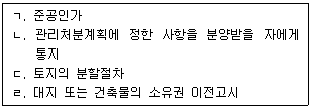
- ㄱ - ㄷ - ㄴ –ㄹ
- ㄱ - ㄹ - ㄷ - ㄴ
- ㄴ - ㄱ - ㄷ –ㄹ
- ㄴ - ㄷ - ㄹ - ㄱ
- ㄷ - ㄹ - ㄱ –ㄴ
(정답률: 20%)
104. 도시 및 주거환경정비법령상 다음 설명에 해당하는 정비 사업은?
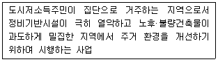
- 주거환경관리사업
- 주택재건축사업
- 주거환경개선사업
- 도시환경정비사업
- 주택재개발사업
(정답률: 27%)
1⑤. 주택법령상 세대구분형 공동주택의 건설기준 등으로 틀린 것은?
- 세대구분형 공동주택의 세대별로 구분된 각각의 공간마다 별도의 욕실, 부엌과 현관을 설치할 것
- 세대구분형공동주택의세대별로 구분된각각의공간은 주거전용면적이 12m2 이상일 것
- 하나의 세대가 통합하여 사용할 수 있도록 세대간의 연결문 또는 경량구조의 경계벽 등을 설치할 것
- 세대구분형 공동주택은 주택단지 공동주택 전체 호수의 3분의 1을 넘지 아니할 것
- 세대구분형 공동주택의 세대별로 구분된 각각의 공간의 주거전용면적 합계가 주택단지 전체 주거전용면적 합계의 3분의 1을 넘지 아니 할 것
(정답률: 27%)
106. 주택법령상 주택조합에 관한 설명으로 옳은 것은?
- 국민주택을공급받기 위하여설립한직장주택조합을해산하려면관할시장·군수·구청장의 인가를 받아야 한다.
- 지역주택조합은 임대주택으로 건설·공급하여야 하는 세대수를 포함하여 주택건설예정세대수의 3분의 1 이상의 조합원으로 구성하여야 한다.
- 리모델링 주택조합의 경우 공동주택의 소유권이 수인의 공유에 속하는 경우에는 그 수인 모두를 조합원으로 본다.
- 지역주택조합의 설립 인가 후 조합원이 사망하였더라도 조합원수가 주택건설예정세대수의 2분의 1 이상을 유지하고 있다면 조합원을 충원할 수 없다.
- 지역주택조합이 설립 인가를 받은 후에 조합원을 추가모집한 경우에는 주택조합의 변경인가를 받아야 한다.
(정답률: 12%)
107. 주택법령상 주택단지가 일정한 시설로 분리된 토지는 각각 별개의 주택단지로 본다. 그 시설에 해당하지 않는 것은?
- 고속도로
- 폭 20m의 도시계획예정도로
- 폭 15m의 일반도로
- 자동차전용도로
- 보행자 및 자동차의 통행이 가능한 도로로서 「도로법」에 의한 일반 국도
(정답률: 27%)
108. 주택법령상 리모델링 기본계획 수립절차에 관한 조문의 일부이다. ( )에 들어갈 숫자를 옳게 연결한 것은?
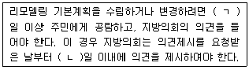
- ㄱ: 7, ㄴ: 14
- ㄱ: 10, ㄴ: 15
- ㄱ: 14, ㄴ: 15
- ㄱ: 14, ㄴ: 30
- ㄱ: 15, ㄴ: 30
(정답률: 28%)
109. 주택법령상 주택상환사채에 관한 설명으로 틀린 것은?
- 등록사업자가 주택상환사채를 발행하려면 금융기관 또는 주택도시보증공사의 보증을 받아야 한다.
- 주택상환사채는 취득자의성명을 채권에기록하지 아니하면사채발행자 및 제3자에게 대항할 수 없다.
- 등록사업자의등록이 말소된경우에는 등록사업자가발행한주택상환사채의 효력은 상실된다.
- 주택상환사채의 발행자는 주택상환사채대장을 비치하고, 주택상환사 채권의 발행 및 상환에 관한 사항을 기재하여야 한다.
- 주택상환사채를 발행하려는 자는 주택상환사채발행계획을 수립하고 국토교통부장관의 승인을 받아야 한다.
(정답률: 25%)
110. 주택법령상 주택의 전매행위 제한에 관한 설명으로 틀린 것은?(단, 수도권은 「수도권정비계획법」에 의한 것임)
- 전매제한기간은 주택의 수급 상황 및 투기 우려 등을 고려하여 지역별로 달리 정할 수 있다.
- 사업주체가 수도권의 지역으로서 공공택지 외의 택지에서 건설·공급 하는 주택을 공급하는 경우에는 그 주택의 소유권을 제3자에게 이전 할 수 없음을 소유권에 관한 등기에 부기등기하여야 한다.
- 세대원 전원이 2년 이상의 기간 해외에 체류하고자 하는 경우로서 사업주체의 동의를 받은 경우에는 전매제한 주택을 전매할 수 있다.
- 상속에 의하여 취득한 주택으로 세대원 전원이 이전하는 경우로서 사업주체의 동의를 받은 경우에는 전매제한 주택을 전매할 수 있다.
- 수도권의 지역으로서 공공택지 외의 택지에서 건설·공급되는 주택의 소유자가 국가에 대한 채무를 이해하지 못하여 공매가 시행되는 경우에는 사업주체의 동의없이도 전매를 할 수 있다.
(정답률: 27%)
111. 주택법령상 주택의 공급에 관한 설명으로 옳은 것은?
- 한국토지주택공사가총지분의100분의70을출자한부동산투자회사가사업주체로서 입주자를 모집하려는 경우에는 시장·군수·구청장의 승인을 받아야 한다.
- 「관광진흥법」에 따라 지정된 관광특구에서 건설·공급하는 층수가 51층이고 높이가 140m인 아파트는 분양가상한제의 적용대상이다.
- 시·도지사는 주택 가격상승률이 물가상승률보다 현저히 높은 지역으로서 주택가격의 급등이 우려되는 지역에 대해서 분양가상한제 적용 지역으로 지정할 수 있다.
- 주택의 사용검사 후 주택단지 내 일부의 토지의 소유권을 회복한 자에게 주택소유자들이 매도청구를 하려면 해당 토지의 면적이 주택단지 전체 대지면적의 100분의 5 미만이어야 한다.
- 사업주체가 투기과열지구에서 건설·공급하는 주택의 입주자로 선정된 지위는 매매하거나 상속할 수 없다.
(정답률: 20%)
112. 건축법령상 건축물의 대지에 조경을 하지 않아도 되는 건축물에 해당하는 것을 모두 고른 것은?(단, 건축협정은 고려하지 않음)
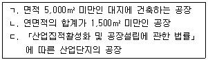
- ㄱ
- ㄷ
- ㄱ, ㄴ
- ㄴ, ㄷ
- ㄱ, ㄴ, ㄷ
(정답률: 24%)
113. 건축법령상 건축허가를 받은 건축물의 철거 등에 관한 설명으로 틀린 것은?
- 건축물 소유자가 건축물을 철거하려면 특별시장·광역시장·특별자치도지사 또는 시장·군수에게 신고하여야 한다.
- 건축물 소유자가 건축물을 철거하려면 철거예정일 3일전까지 건축물 철거·멸실신고서에 해체공사계획서를 첨부하여야 한다.
- 건축물의소유자나관리자는건축물의재해로멸실된경우멸실후30일 이내에 신고하여야 한다.
- 석면이함유된 건축물을철거하는경우에는 「산업안전보건법」등관계 법령에 적합하게 석면을 먼저 제거·처리한 후 건축물을 철거하여야 한다.
- 건축물철거·멸실신고서를 제출받은 특별자치도지사는 건축물의 철거·멸실여부를 확인한후 건축물대장에서철거·멸실된건축물의 내용을 말소하여야 한다.
(정답률: 14%)
114. 건축법령상 고층건축물의 피난시설에 관한 내용으로 ( )에 들어갈 것을 옳게 연결한 것은?
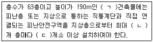
- ㄱ: 준고층, ㄴ: 20, ㄷ: 1
- ㄱ: 준고층, ㄴ: 30, ㄷ: 2
- ㄱ: 초고층, ㄴ: 20, ㄷ: 1
- ㄱ: 초고층, ㄴ: 30, ㄷ: 1
- ㄱ: 초고층, ㄴ: 30, ㄷ: 2
(정답률: 27%)
115. 건축법령상 '주요구조부'에 해당하지 않는 것만을 모두 고른 것은?
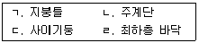
- ㄴ
- ㄱ, ㄷ
- ㄷ, ㄹ
- ㄱ, ㄴ, ㄹ
- ㄱ, ㄴ, ㄷ, ㄹ
(정답률: 29%)
116. 건축법령상 건축협정에 관한 설명으로 틀린 것은?(오류 신고가 접수된 문제입니다. 반드시 정답과 해설을 확인하시기 바랍니다.)
- 건축물의 소유자등은 과반수의 동의로 건축물의 리모델링에 관한 건축협정을 체결할 수 있다.
- 협정체결자 또는 건축협정운영회의 대표자는 건축협정서를 작성하여 해당 건축협정인가권자의 인가를 받아야 한다.
- 건축협정인가권자가 건축협정을 인가하였을 때에는 해당 지방자치단체의 공보에 그 내용을 공고하여야 한다.
- 건축협정체결대상토지가둘이상의특별자치시또는시·군·구에걸치는 경우 건축협정 체결 토지면적의 과반이 속하는 건축협정인가권자에게 인가를 신청할 수 있다.
- 협정체결자 또는 건축협정운영회의 대표자는 건축협정을 폐지하려는 경우 협정체결자 과반수의 동의를 받아 건축협정인가권자의 인가를 받아야 한다.
(정답률: 17%)
117. 건축법령상 건축물에 공개 공지 또는 공개 공간을 설치하여야 하는 대상지역에 해당하는 것은?(단, 지방자치단체장이 별도로 지정·공고하는 지역은 고려하지 않음)
- 전용주거지역
- 일반주거지역
- 전용공업지역
- 일반공업지역
- 보전녹지지역
(정답률: 23%)
118. 건축법령상 특별자치시장·특별자치도지사 또는 시장·군수·구청장에게 신고하고 축조하여야 하는 공작물에 해당하는 것은?(단, 건축물과 분리하여 축조하는 경우이며, 공용건축물에 대한 특례는 고려하지 않음)
- 높이 5m의 기념탑
- 높이 7m의 고가수조(高架水槽)
- 높이 3m의 광고탑
- 높이 3m의 담장
- 바닥면적 25m2의 자하대피호
(정답률: 31%)
119. 농지법령상 용어에 관한 설명으로 틀린 것은?
- 실제로농작물 경작지로 이용되는 토지 이더라도 법적 지목이 과수원인 경우는 '농지'에 해당하지 않는다.
- 소가축 80두를 사육하면서 1년 중 150일을 축산업에 종사하는 개인은 '농업인'에 해당한다.
- 3,000m2의 농지에서 농작물을 경작하면서 1년 중 80일을 농업에 종사 하는 개인은 '농업인'에 해당한다.
- 인삼의 재배지로 계속하여 이용되는 기간이 4년인지 목이 전(田)인 토지는 '농지'에 해당한다.
- 농지 소유자가 타인에게 일정한 보수를 지급하기로 약정하고 농작업의 일부만을 위탁하여 행하는 농업경영도 '위탁경영'에 해당한다.
(정답률: 22%)
120. 농지법령상 국·공유재산이 아닌 A농지와 국유재산인 B농지를 농업경영을 하려는 자에게 임대차하는 경우에 관한 설명으로 옳은 것은?
- A농지의 임대차계약은 등기가 있어야만 제3자에게 효력이 생긴다.
- 임대인이 취학을 이유로 A 농지를 임대하는 경우 임대차 기간은 3년 이상으로 하여야 한다.
- 임대인이 질병을 이유로 A 농지를 임대하였다가 같은 이유로 임대차계약을 갱신하는 경우 임대차 기간은 3년 이상으로 하여야 한다.
- A농지의 임차인이 그 농지를 정당한 사유 없이 농업경영에 사용하지 안니할 경우 농지소재지 읍·면장은 임대차의 종료를 명할 수 있다.
- B농지의 임대차기간은 3년 미만으로 할 수 있다.
(정답률: 13%)
- "중개인" : 중개를 하는 자로서, 공인중개사와 부동산중개사가 있음
- "공인중개사" : 부동산 중개에 관한 법률에 따라 국가에서 인가한 자로서, 부동산 매매, 임대 등 부동산 거래에 관여하여 매매 또는 임대 계약을 성립시키는 업무를 수행하는 자
- "부동산중개사" : 공인중개사가 아닌 중개사로서, 부동산 매매, 임대 등 부동산 거래에 관여하여 매매 또는 임대 계약을 성립시키는 업무를 수행하는 자
- "ㄱ" : 공인중개사는 부동산 거래에 관여하여 매매 또는 임대 계약을 성립시키는 업무를 수행하는 자임
- "ㄴ" : 부동산중개사는 공인중개사가 아닌 중개사로서, 부동산 거래에 관여하여 매매 또는 임대 계약을 성립시키는 업무를 수행하는 자임
- "ㄷ" : 중개인은 중개를 하는 자로서, 공인중개사와 부동산중개사가 있음
- "ㄹ" : 중개는 부동산 매매, 임대 등 부동산 거래에 관여하여 매매 또는 임대 계약을 성립시키는 행위임
따라서, "ㄱ, ㄴ, ㄷ, ㄹ" 모두 공인중개사법령상 용어와 관련된 설명으로 옳은 것임.